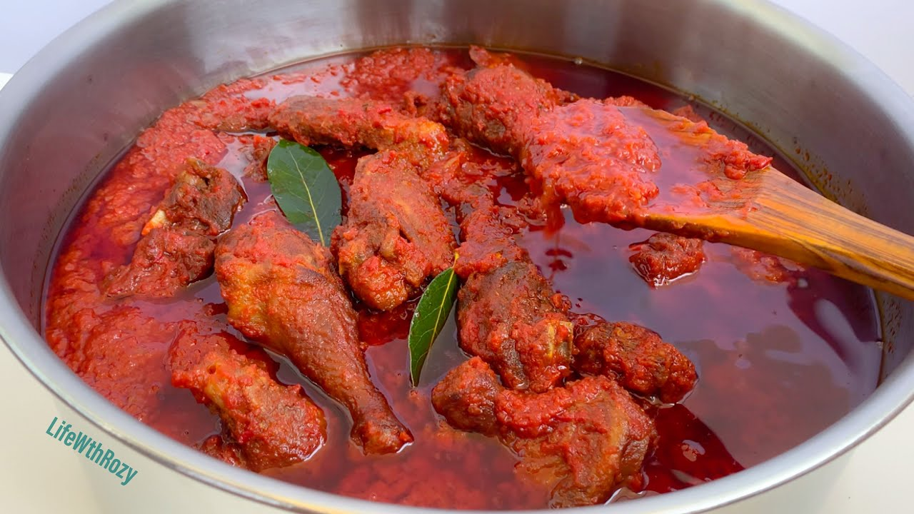

Go Back
Chicken Stew

Description
This is what a Nigerian chicken stew looks like when it's finished. While it's one of the easiest things to make, it is very delicious, spicy and a good way to be introduced to NIgerian food.
You can eat this with rice, yam, spaghetti noodles, etc.
Ingredients
- Vegetable oil
- Garlic powder
- Tomatoes
- Onion
- Ginger powder
- Curry and thyme
- Chicken thighs (drumsticks)
- Seasoning powder
- Salt to taste
Steps
- Put chicken in a pot and add 2 tbsp garlic powder, 1 tbsp ginger powder, chopped onions, 1 tsp rosemary powder, 1tbsp seasoning powder and about 3/4 tbsp salt to taste
- Add 2 1/2 cups of water and let it boil for about 23 minutes
- When it's all cooked, remove the chicken and store somewhere. keep the chicken broth in a separate bowl to be used for the stew later